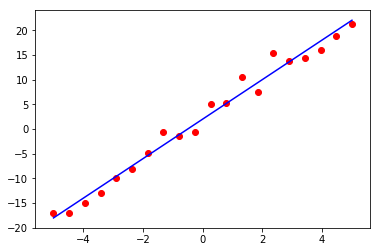
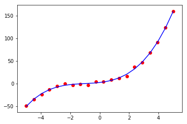
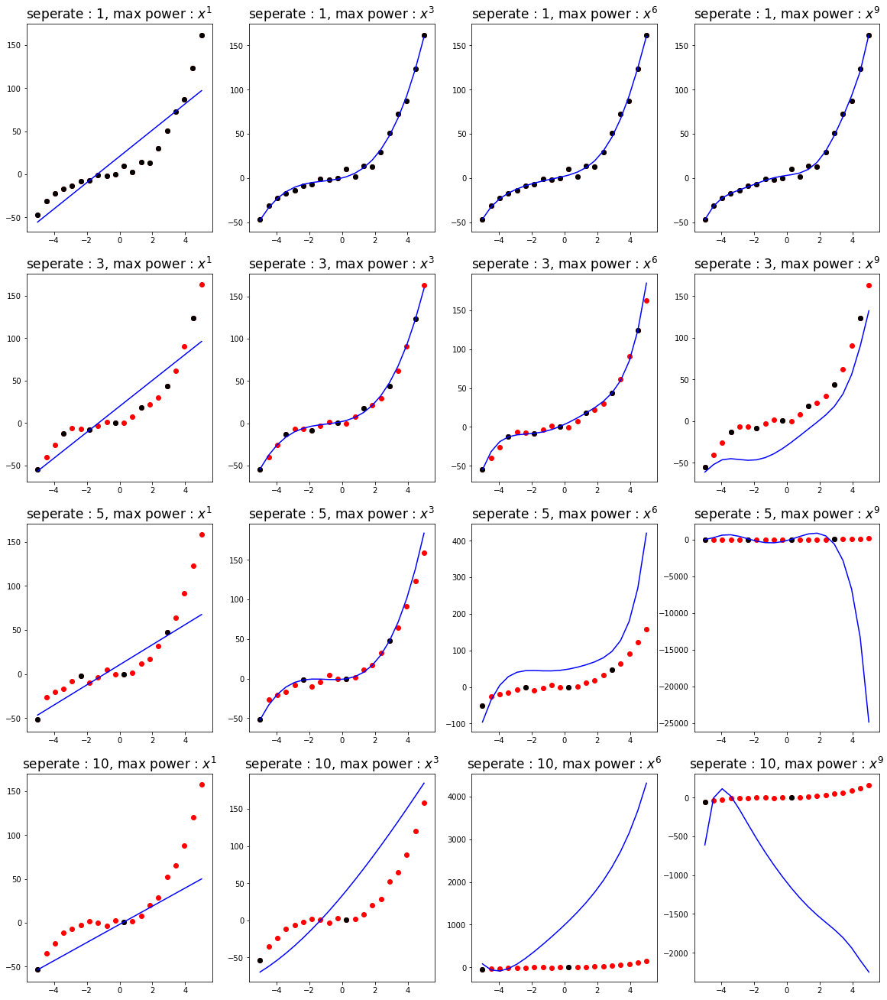
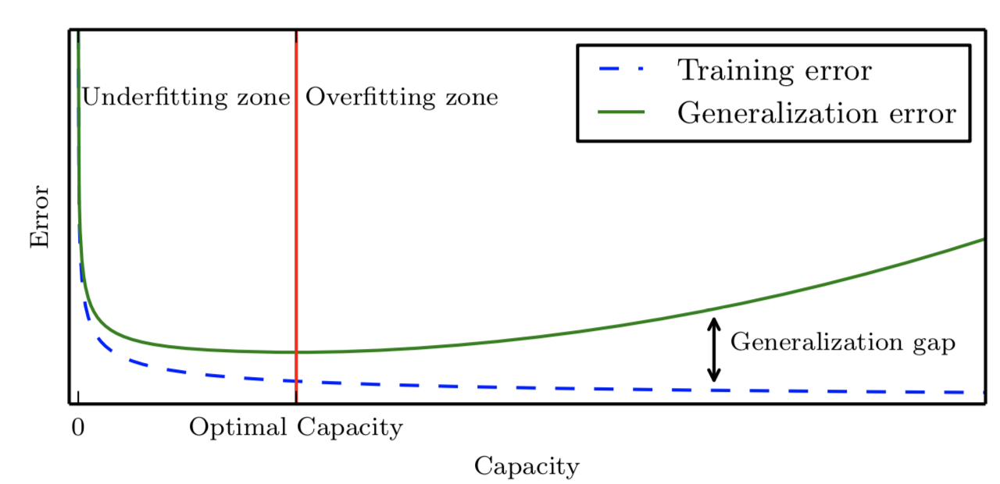
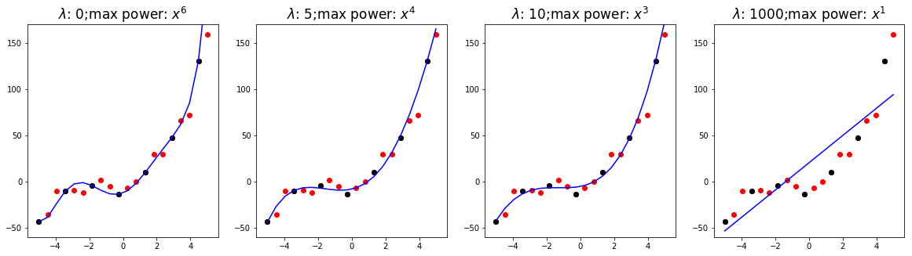

foolish fly fox's blog
foolish fly fox's blog
--Stay hungry, stay foolish.
--Forever young, forever weep.
第五章 机器学习基础
机器学习本质上属于应用统计学，更多地关注于任何用计算机统计地估计复杂函数。因此我们会探讨统计学的两种主要方法：频率派估计和贝叶斯推断。
大部分深度学习算法都是基于被称为随机梯度下降的算法求解的。我们需要组合不同的算法部分，如优化算法、代价函数、模型、数据集，最终建立一个机器学习算法。
5.1 学习算法
机器学习算法：一种能够从数据中学习的算法。
学习：对于某类任务T，为其定义性能度量P，一个计算机程序被认为可以从经验E中学习是指：通过经验E改进后，它在任务T上的性能度量P有所提高。
5.1.1 任务 T
机器学习任务定义为：机器学习系统应该如何处理样本。例如，识别手写字的任务为：通过将输入的图片处理后，输出该图片对应的数字。
样本是量化的特征的集合，用一个向量 表示，其中向量的每个元素 是一个特征，如一种图片的一个特征就是像素点所对应的值。
任务的类型：
- 分类：如识别手写数字
- 返回函数为 中的一个数值；即返回的是一个具体的类别
- 返回函数为 ；即返回的是每个类别的概率
- 输入缺失分类：当一些输入可能不全或丢失时，学习算法必须学习一组函数而不是单个函数，每个函数对应不同的缺失输入子集；如通过对患者的部分检查结果的分析，对疾病进行判断
- 回归：返回函数为 ，如某房子的房价估计
- 结构化输出：输出是一串数据，而非单个值；输出的数据内部关系紧密
- 转录：非结构化数据 → 文本信息，如语音识别、自动生成图片描述
- 机器翻译：一种语言符号序列 → 另一种用于符号序列
- 图片的像素级分割：标准航拍照片中的道路位置
- ... ...
- 异常检测：在一组事件或对象中筛选，标记不正确或非典型的个体，如信用卡欺诈检测
- 缺失值填补
- 合成和采样：机器学习程序生成一些和训练数据相似的新样本，在媒体应用中非常有用，可以避免艺术家大量昂贵或乏味费时的手动工作，或者是将文本合成为音频
- 去噪：将损坏的样本恢复
5.1.2 性能度量 P
性能度量 P 是特定于系统执行的任务 T 而言的：
分类 /缺失输入分类 /转录：准确率(accuracy) 或 错误率(error-rate)
性能度量的选择看上去简单客观，但是选择一个与系统理想表现对应的性能度量通常很难，因为很难确定应该度量什么。如执行回归任务时，我们应该更多地惩罚频繁犯的中等错误的系统，还是较少犯错但是每个错误都非常严重的系统呢？这些设计由具体应用决定。
经验 E
根据经验 E 的不同，机器学习算法可以分为：无监督(unsupervised)算法 和 监督(supervised)算法。
数据集是指很多样本组成的集合，有时候，我们也将样本称为数据点(data point)。
大致来说，无监督学习涉及到观察随机向量 x 的好几个样本，试图显示或隐式地学习出概率分布 ，或者是该分布的一些有意思的性质；
监督学习包含观察随机向量 及其相关联的值或向量 ，通常是估计 。
无监督学习和监督学习不是严格定义的术语。它们之间的界限通常是模糊的。很多机器学习技术可以用于这两个任务，例如概率的链式法则：
该分解意味着我们可以将一个非监督学习问题拆分成 n 个监督学习问题。
另外，我们在求解监督学习问题 时，也可以使用传统的无监督学习策略学习联合分布 ，然后推断：
传统地，回归、分类、结构化输出问题称为监督学习。支持其他任务的密度估计通常被称为无监督学习。
学习范式 的其他变种，如 半监督学习：一些样本有监督目标，但其他样本没有；多实例学习：样本以包为单位（一个包中包含多个样本）被标注为含有或不含有该类的样本，但是集合中单独的样本是没有标记的。
有些机器学习算法并不是训练一个固定的数据集，如强化学习(inforencement learning)算法，会和环境进行交互，所以学习系统和它的训练过程会存在反馈回路。
大部分机器学习算法都是在一个给定数据集上进行训练的。数据集是样本的集合，样本是特征的集合。
表示数据集的常用方法是设计矩阵(design matrix)。设计矩阵的每一行包含一个不同的样本，每列对应样本中的一个特征。
一个样本包含一个标签或者目标和一组特征。正如监督学习和无监督学习没有正式的定义，数据集或者经验也没有严格的区分。
5.1.4 示例：线性回归
线性回归的目标：获得一个函数 ，满足：，使得 接近于真实的标签 。我们定义输出为：，其中 ，是我们需要学习的参数(parameter)。
在线性回归中，我们对任务 T 的定义：通过输出 ，从 预测 。
测试集的特征和标签分别用 和 表示。
一种性能度量方式是均方误差（mean squared error），如果 表示模型在测试集上的预测值，那么均方误差公式为：
为了构建一个机器学习算法，我们需要设计一个算法，通过观察训练集 () 获得经验，改进权重 以减少 。一种直观的方式是最小化训练集上的均方误差，即 。最小化 ，我们可以简单地求解其导数为 0 的情况：
通过式子(5.12)给出解的系统方程被称为 正规方程
函数 称为仿射函数，其中，当 时，变为，称为线性函数，即线性函数是仿射函数的一个特例。
实验：正规方程拟合一次函数
import matplotlib.pyplot as plt import numpy as np def f(x): return x*3.861+1.552 X = np.hstack((np.linspace(-5,5,20).reshape(-1,1),np.ones((20,1))*1)) y = f(X[:,0]).reshape(-1,1)+np.random.randn(20,1)*2 # 用公式求权重 w = np.linalg.inv(X.T.dot(X)).dot(X.T).dot(y) print(list(w)) hat_y = X.dot(w) plt.plot(X[:, 0], hat_y, c='b') plt.scatter(X[:,0],y[:,0], c='r') plt.show()
得到的 w 为 : [4.00654227, 2.03617416]
绘制的图像为：

容量、过拟合和欠拟合
在先前为观测到的输入上表现良好的能力称为泛化（generalization）。
我们使用某个训练集，在训练集上计算一些被称为 训练误差(training error)的度量误差，目标是降低训练误差。如果仅仅是降低训练误差，那么这就是一个优化问题，而机器学习和优化问题的不同之处在于，我们也希望泛化误差(generalization error)也同样小。
在线性回归示例中，我们通过最小化训练误差 来训练模型，但是我们真正关心的是泛化误差：
要在减小训练误差过程中，同时减小测试误差，我们需要有一个 独立同分布(i.i.d. assumption)的假设：数据集中的每个样本都是彼此独立的(independent)，并且训练集和测试集是同分布的(identically distributed)。
以下是决定机器学习算法效果是否好的因素：
- 降低训练误差
- 缩小训练误差和测试误差的差距
好的训练：训练误差和测试误差都很小
欠拟合(underfitting)：训练误差和测试误差都很大
过拟合(overfitting)：训练误差很小，测试误差很大
模型的容量：指其拟合各种函数的能力。容量小的模型很难拟合训练集，容量大的模型容易过拟合。
一种控制训练算法容量的方法是选择假设空间（hypothesis space），即学习算法可以选择一个合适的函数集作为解决方案的函数集。
例如，线性回归函数将关于其输入的所有线性函数作为假设空间。广义线性回归的假设空间包括多项式函数,而非仅有线性函数。这样做就增加了模型的容量。
一次多项式提供了我们已经熟悉的线性回归模型，其预测如下：，通过引入 作为线性回归模型的另一个特征，我们能够学习关于 的二次函数模型：
尽管该模型是输入的二次函数，但输出仍然是参数的线性函数。因此我们仍然可以用正规方程获得模式的闭式解(也称为解析解)。
我们可以继续添加 的更高幂作为额外特征，例如下面的 9 次多项式：
当机器学习算法的容量适合于所执行任务的复杂度和所提供训练数据的数量时，算法效果通常会最佳。容量不足的模型不能解决复杂任务，容量高的模型能够解决复杂的任务，但是当其容量高于任务所需时，有可能会过拟合。
实验：正规方程拟合高次函数
import matplotlib.pyplot as plt import numpy as np def f(x): return x*3.861+2.12*x**2+0.67*x**3+1.552 X = np.hstack((np.linspace(-5,5,20).reshape(-1,1),np.ones((20,1))*1)) # 拟合最高次为4的函数 X = np.hstack((X[:,0].reshape(-1,1), (X[:,0]**2).reshape(-1,1), (X[:,0]**3).reshape(-1,1), (X[:,0]**4).reshape(-1,1), X[:,-1].reshape(-1,1))) y = f(X[:,0]).reshape(-1,1)+np.random.randn(20,1)*2 # 用公式求权重 w = np.linalg.inv(X.T.dot(X)).dot(X.T).dot(y) print(list(w.flatten())) hat_y = X.dot(w) plt.plot(X[:, 0], hat_y, c='b') plt.scatter(X[:,0],y[:,0], c='r') plt.show()
代码和一次函数的拟合非常相似，不同在于特征加入了高次，得到的 w 为：[3.71743889404003, 2.1291721826267382, 0.68793620217190288, -0.0017444665565614081, 2.2658935002908454]。由于在真实的 中并没有4次项，故4次项特征对应的权重为-0.0017444665565614081，远小于其他权重。
绘制的图像为：

实验结束
实验：采样点个数对正规方程拟合的影响
本实验主要探究不同的采样点多少对不同次的模型的影响：
import matplotlib.pyplot as plt import numpy as np import random def f(x): return x*3.861+2.12*x**2+0.67*x**3+1.552 # 通过采样间隔控制采样点的个数 def test(seperate): X = np.hstack((np.ones((20,1)), np.linspace(-5,5,20).reshape(-1,1))) X = np.hstack((X[:,0].reshape(-1,1), X[:,1].reshape(-1,1), (X[:,1]**2).reshape(-1,1), (X[:,1]**3).reshape(-1,1), (X[:,1]**4).reshape(-1,1), (X[:,1]**5).reshape(-1,1), (X[:,1]**6).reshape(-1,1), (X[:,1]**7).reshape(-1,1), (X[:,1]**8).reshape(-1,1), (X[:,1]**9).reshape(-1,1) )) y = f(X[:,1]).reshape(-1,1)+np.random.randn(len(X),1)*3 # 抽取若干样本点 selected = list(range(0,20,seperate)) # 抽取 0~1 次作为特征 X_1 = X[selected][:,:2] # 抽取 0~3 次作为特征 X_3 = X[selected][:,:4] # 抽取 0~6 次作为特征 X_6 = X[selected][:,:7] # 抽取 0~9 次作为特征 X_9 = X[selected][:,:10] plt.figure(figsize=(20,5)) for i,X_i in enumerate((X_1, X_3, X_6, X_9)): w = np.linalg.inv(X_i.T.dot(X_i)).dot(X_i.T).dot(y[selected]) hat_y = X[:, :len(w)].dot(w) plt.subplot(1,4,i+1) plt.title(f"seperate : {seperate}, max power : $x^{len(w)-1}$", fontsize=17) plt.plot(X[:, 1], hat_y[:, 0], c='b') plt.scatter(X[:,1],y[:,0], c='r') plt.scatter(X[selected,1],y[selected,0], c='k') plt.show() # 采样间隔为1，不丢失采样点 test(1) # 采样间隔为3，丢失2/3的采样点 test(3) # 采样间隔为5，丢失4/5的采样点 test(5) # 采样间隔为10，丢失9/10的采样点 test(10)

实验结束。
可以看出，正规方程拟合模型的次数越高（超出实际的方程），采样点数量对其影响越大。
目前为止，我们探讨了通过改变输入特征的数目和加入这些特征对应的参数，改变模型的容量。事实上，还有很多方法可以改变模型的容量。
容量不仅取决于模型的选择。所有模型能够表示的函数集合，称为模型的表示容量，但是可能由于优化算法的不完美，不能在表示容量中寻找最优解，优化算法可以获取的解的集合称为有效容量，有效容量会小于模型的表示容量。
提供学习模型的泛化能力，有一个简约的原则——奥克姆剃刀：在同样能够解释以观测到现象的假设中，我们应该选择“最简单”的那一个。
统计学习理论提供了量化模型容量的不同方法，其中最有名的是 VC维度。
直观的对VC维度定义为单个分类器可最多分类的数据点的个数，如在二维空间上，一个线性分类器的vc维度是3，因为它可以准确对任意三个点进行正确分类，无论它们如何排列。
统计学习理论中，最重要的结论阐述了训练误差和泛化误差之间差异的上界随着模型容量增长而增长，但随着样本增多而下降。
由于有效容量受限于优化算法的能力，确定深度学习模型容量的问题特别困难。
通常，当模型容量上升时，训练误差会下降，直到其接近最小可能误差。通茶，泛化误差是一个关于模型容量 U 型曲线函数。

有时候，非参数模型仅仅是一些不能实际实现的理论抽象（比如搜索所有可能概率分布的算法）。然而，我们也可以设计一些实用的非参数模型，使它们的复杂度和训练集的大小有关。
这种算法的一个示例是最近邻回归(nearest neighbor regression)：模型存储了训练集中所有的 和 ，当需要为测试点 分类时，模型会查询训练集中离该店最近的点，并返回相关的回归目标，即 ，其中 。
5.2.1 没有免费午餐定理
在所有可能的数据生成分布上平均以后，每个分类算法在未事先观测的点上都有相同的错误率。
幸运的是，该结论仅在我们考虑所有可能的数据生成分布时才成立。这意味着：机器学习研究的目标不是找一个通用学习算法或是绝对最好的学习算法，相反，我们的目标是理解什么样的分布与人工智能获取经验的“真实世界”相关，什么样的学习算法在我们所关注的数据生成分布上效果最好。
5.2.2 正则化
没有免费午餐定理按时我们必须在特定任务上设计性能良好的机器学习算法，我们建立一组学习算法的偏好来达到这个要求，当这些偏好和我们希望算法解决的学习问题相吻合时，性能会更好。
在假设空间中，相比于某一个学习算法，我们可能更偏好另一个学习算法，这意味着两个函数都是符合条件的，但是我们更加偏好其中一个。只有非偏好函数在训练数据上效果明显好很多时，我们才会考虑选择非偏好函数。
例如，我们可以加入 权重衰减(weight decay) 来修改线性回归的训练标准，带权重衰减的线性回归最小化训练集上的均方误差和正则项的和 ，其偏好与平方 范数较小的权重，具体如下：
其中，lambda是提前挑选的值，控制我们偏好小范数权重。最小化 可以看成是拟合训练数据和偏好较小权重之间的权衡。这会使解决方案的斜率较少，或是将权重放在较少的特征上。我们可以训练具有不同 值的高次多项式回归模型。
表示对函数的偏好是比增减假设空间的成员函数更一般的控制模型容量的方法。我们可以将去掉假设空间中的某个函数看作是对不赞成这个函数的无限偏好。
正则化是指我们修改学习算法，使其降低泛化误差而非训练误差。正则化是机器学习领域的中心问题之一，只有优化能够与其重要性相媲美。
实验 : 正规方程+正则化
我们希望通过正规化，让机器能够自动选择最高次数，我们通过实验看看 对训练的影响：
import matplotlib.pyplot as plt import numpy as np import random def f(x): return x*3.861+2.12*x**2+0.67*x**3+1.552 def MSE(hat_y, y): return (sum((hat_y-y)**2)/len(y)).flatten()[0] X = np.hstack((np.ones((20,1)), np.linspace(-5,5,20).reshape(-1,1))) X = np.hstack((X[:,0].reshape(-1,1), X[:,1].reshape(-1,1), (X[:,1]**2).reshape(-1,1), (X[:,1]**3).reshape(-1,1), (X[:,1]**4).reshape(-1,1), (X[:,1]**5).reshape(-1,1), (X[:,1]**6).reshape(-1,1), (X[:,1]**7).reshape(-1,1), (X[:,1]**8).reshape(-1,1), (X[:,1]**9).reshape(-1,1) )) # 固定随机化过程，阅读代码时这句可忽略 np.random.seed(6666) y = f(X[:,1]).reshape(-1,1)+np.random.randn(len(X),1)*8 # 抽取若干样本点 selected = list(range(0,20,3)) plt.figure(figsize=(20,5)) lamds = (0,5,10,20) # 遍历 λ 的值 for f_n,lamd in enumerate(lamds): b_cost = b_hat_y = b_power = None for i in range(X.shape[1]): X_i = X[selected][:, :(i+1)] w = np.linalg.inv(X_i.T.dot(X_i)).dot(X_i.T).dot(y[selected]) hat_y = X[:, :len(w)].dot(w) # 计算带正则化项的损失 cur_cost = MSE(hat_y[selected,:], y[selected,:]) + i*lamd if b_cost==None or b_cost>cur_cost: b_cost = cur_cost b_hat_y = hat_y b_power = i plt.subplot(1,len(lamds), f_n+1) plt.title(f"$\lambda$: {lamd};max power: $x^{b_power}$", fontsize=17) plt.plot(X[:, 1], b_hat_y[:, 0], c='b') plt.scatter(X[:,1],y[:,0], c='r') plt.scatter(X[selected,1],y[selected,0], c='k') plt.ylim(-60, 170) plt.show()
最后的结果为：

其中黑色的点是提供给机器进行学习的样本点，红色的点是全部的样本点。
我们所提供的正则化项偏向于选择最高次系数较小的模型。可以看出，在 （即没有正则化）时，选择了最高次为 6 的模型，并且该模型也通过了所有的黑点。而随着 的增大，选择的最高次也越来越小。当选择的 过大时，模型变为简单的 1 次。
5.3 超参数和验证集
大多数机器学习算法都有超参数，可以设置来控制算法行为，超参数的值不是通过学习算法本身学习出来的（尽管我们可以设置一个嵌套的学习过程，一个学习算法为另一个学习算法学出最优超参数）。
和训练数据同分布的样本组成的测试集可以用于估计学习完成后学习器的泛化误差，其重点在于测试样本不能以任何形式参与到模型的选择中，包括设定超参数。
基于这个原因，测试集中的样本不能用于验证集，因此，我们总是从训练数据中构建验证集。特别地，我们将训练数据分成两个不相交的子集，其中一个用于学习参数，另一个作为验证集，用于估计训练中或训练后的泛化误差，更新超参数。
用于学习参数的数据子集通常仍然被称为训练集，尽管这会和整个训练过程用到的更大的数据集同名。用于挑选超参数的数据子集称为 验证集(Validation Set)。通常，80% 的训练数据用于训练学习参数，20%用于验证。
用于验证集是用来“训练”超参数的，验证集会低估泛化误差，所有超参数优化完成之后，泛化误差需要通过测试集来估计。